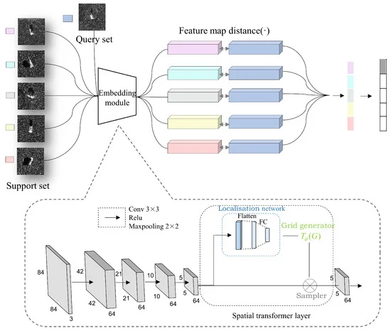
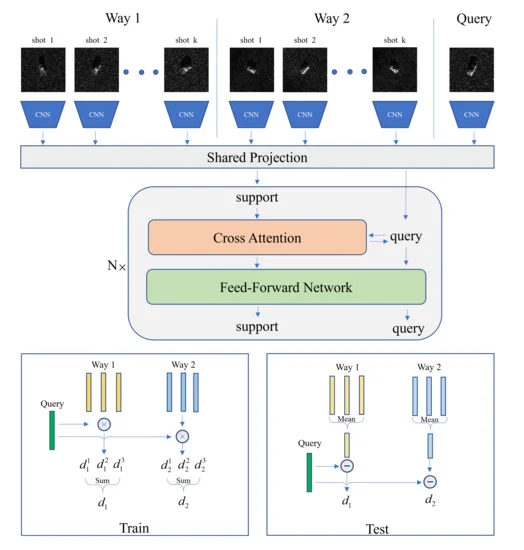

Jinlei CaiI earned my master's degree from the University of Chinese Academy of Science(UCAS),under the supervision of Zhang yueting and Guo Jiayi.My thesis centered on 3D modeling and classification of vehicles under limited observation angles. During my gap year, I concentrated on sparse-view 3D reconstruction based on Gaussian Splatting and did some modeling works using Blender in my spare time. I earned my master's degree from the University of Chinese Academy of Science(UCAS),under the supervision of Zhang yueting and Guo Jiayi.My thesis centered on 3D modeling and classification of vehicles under limited observation angles. During my gap year, I concentrated on sparse-view 3D reconstruction based on Gaussian Splatting and did some modeling works using Blender in my spare time. |

|
Publications
|  |
ST-PN: A Spatial Transformed Prototypical Network for Few-Shot SAR Image Classification |
|  |
Few-Shot SAR-ATR Based on Instance-Aware Transformer |